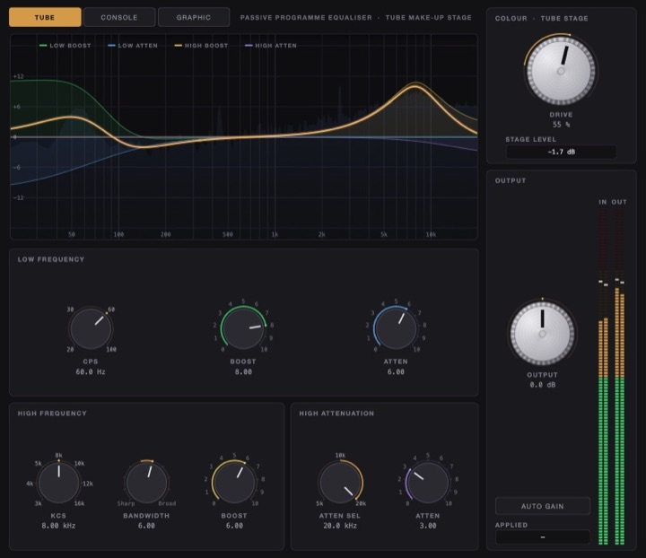

Monitoring
UKWELI 2
Mix on headphones inside modelled control rooms, with a separate mode for the monitors on your desk.
- 88 spaces
- 148 speakers
- 18 bands
- 72 samples
Included in The Whole Studio: all 43 products at launch for $199 until 31 January 2027.

Actual UKWELI 2 interface
What is UKWELI 2?
UKWELI 2 is a headphone and speaker monitoring plug-in for macOS, in AU and VST3, plus a standalone app. Put any of 148 speaker models in any of 88 modelled rooms and hear them on your headphones, tuned to your headphones and your ears with Ear ID. Speakers mode fits the monitors on your desk to your room and your seat. The rooms and speakers are designed acoustic models, not measured copies of real studios or products.
By the numbers
What it does
88 rooms, 148 speakers
144 loudspeaker models plus 4 subtle variants, in any of 88 modelled spaces, from a large control room to a car, a club, a phone and earbuds.
Ear ID
Works with any headphones. Choose your headphone type as a starting point, then 18-band loudness matching, 7-band left/right centring and optional 6-band listening thresholds tune the sound to your ears, by listening, with no microphone. Each profile is saved to a file you can load in any project.
Width, Distance, Ambience
Three live knobs on one fixed scene. Width narrows or brings out the sides and leaves the centre alone, Distance moves between direct detail and the room, and Ambience opens the room's reflections or removes them. You hear each turn as you make it, and nothing reloads.
Four listening lenses
Sub Feel or Sub Reveal, Air, Edge and Focus bring out what is hard to judge on headphones.
Speakers mode
For the monitors on your desk. Enter your room, your seat and where the speakers stand: Room Fix cuts room modes by up to 12 dB, Become makes your monitors play like another speaker from the catalogue within what they can do, and Tight Bass lines each bass note up with its attack (it adds 40 ms, so leave it off while recording). All of it is model-based, not a microphone measurement.
Everything your Mac plays
The UKWELI 2 app runs music, video and any other app through the studio, using its own audio device, UKWELI Audio. UKWELI Tracker can follow your head with the Mac's camera (macOS 10.15 or later); the camera picture stays on your Mac.
Print Guard
Put UKWELI last on your master bus while you mix. With Print Guard on, offline bounces pass without the studio processing or Ear ID test signals. Bypass UKWELI before a real-time bounce.
Tech specs
Formats & system
- TypeHeadphone and speaker monitoring plug-in
- FormatsAU · VST3 · Standalone · no AAX
- NeedsA host that loads AU or VST3 plug-ins, or none: it also runs as an app
- macOS10.13 or later; built for Intel and Apple Silicon (Apple Silicon testing in progress)
- WindowsPlug-in planned for January 2027
- Latency72 samples at 48 kHz · Tight Bass adds 40 ms
- ActivationOnline once, then offline
Price & licence
- Price$79 · one-time, free updates within the major version
- Free trial14 days, the full product. It never turns into a purchase by itself.
- RefundsWithin 14 days if it does not work on your system
- LicencePer user · up to 3 of your computers
- Also inThe Whole Studio, all 43 for $199
- FlagshipChoose it in the Producer Pack
- HelpSupport · hello@simlaf.com
Keep exploring
All of Monitoring
SIMLAF Spectral
Resonance suppression and spectral dynamics, at zero latency.
- 97 checks
- 1/48 oct

KAMILI
A complete mastering chain in one plug-in, at zero latency by default.
- 47 modules
- 22 targets

KARAKANA
Thirteen analogue units, modelled at component level, in a six-slot rack.
- 13 units
- 6 slots

TECTON 2
A bass amp system: 120 amps, 221 sounds.
- 120 amps
- 150 effects
The Whole Studio · launch price
$2,347 of audio products. $199.
All 43 products available at launch, plus SIMLAF 2 when it ships in December 2026. $199 until 31 January 2027, then $399.
New releases
The catalogue grows every month.
The SIMLAF catalogue grows every month. Subscribe and hear every release first.
Automatic sign-up is opening soon. You can request these updates by emailing us now.
Email for updatesNew releases and SIMLAF news. Unsubscribe any time. See our privacy notice.